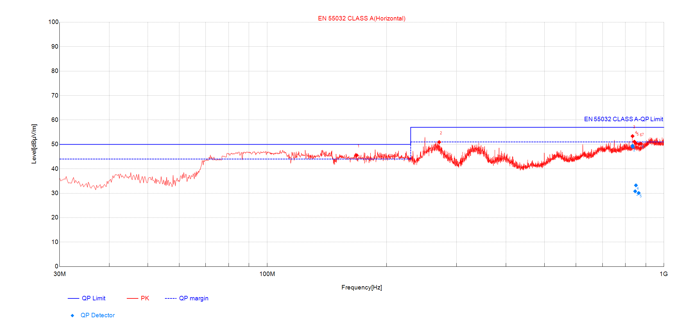
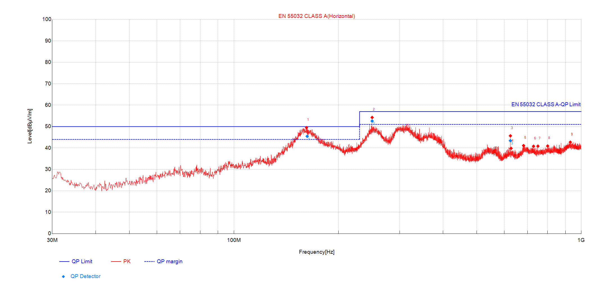

The wall emitted a cluster of narrowband spurs across 833–875 MHz, sitting inside the mobile 800 MHz uplink. A custom receiving-card firmware spread the offending clock; the two lab scans below are measured proof of the effect.
The 833.3 MHz spur is the 5th harmonic of the receiving card's 166.66 MHz SDRAM clock. Rather than move the clock, the fix enables spread-spectrum clocking (SSC): the clock is dithered over a small range so its harmonic is smeared across several MHz instead of standing as one sharp line — which drops the measured quasi-peak. It ships as a receiving-card firmware update, applied to every card on the wall.
Each pair is one frequency: orange is the emission before the firmware, teal after. The two dashed lines are the EN 55032 limits — Class A (57, the basis these scans were tested to) and the stricter Class B (47) that applies to a public installation. Before, every peak clears Class A but breaks into the Class B zone; after, all fall below Class B. Y-axis starts at 30 dBµV/m.
Same cabinet, same chamber, EN 55032 Class A horizontal sweep. Watch the 800–900 MHz region on the right: the pre-fix comb pressing on the limit flattens into the floor after the firmware.

Marked peaks 3–7 cluster at 833–875 MHz, each within ~3.6–6.9 dB of the limit.

No discrete emission in 833–875 MHz; nearest peaks 800.1 MHz @ 40.9 and 929.6 MHz @ 42.7.
| Frequency | Before PK | vs Class A · 57 | vs Class B · 47 | After |
|---|---|---|---|---|
| 833.3 MHz | 53.39 | +3.6 pass | −6.4 fail | no spur < B |
| 842.4 MHz | 51.11 | +5.9 pass | −4.1 fail | no spur < B |
| 850.2 MHz | 50.43 | +6.6 pass | −3.4 fail | no spur < B |
| 865.5 MHz | 50.11 | +6.9 pass | −3.1 fail | no spur < B |
| 875.0 MHz | 50.28 | +6.7 pass | −3.3 fail | no spur < B |
Levels in dBµV/m at 3 m. Class A limit 57, Class B 47 (= Class A − 10 dB). Before the firmware the band clears Class A but exceeds Class B at every line — the quasi-peak figures (49.5 / 50.3) fail Class B too. After, no discrete spur remains and the band floor (≈ 41) sits ~6 dB below Class B.
The firmware removed the 833 MHz spur and the four lines above it. The quasi-peak the standard measures dropped by more than 12 dB — enough to turn the band from a Class B failure into a ~6 dB pass, in both polarisations. This is solid, repeatable chamber evidence that the adjustment does what it was meant to do.
Scale. This is one cabinet at 3 m, where the fixed wall clears Class B by ~6 dB. One screen is 272 cabinets; their emissions sum to roughly +16 to +24 dB, so the assembled facade can still exceed Class B even after the fix. Only an on-site measurement settles it.
The victim's view. Spread-spectrum lowers the sharp peak but spreads the same energy over a wider band. A mobile receiver adds up power across its whole channel, so the on-site check should measure in-channel power in the uplink band, not only the peak — that is the number that tells us whether the real interference is gone.